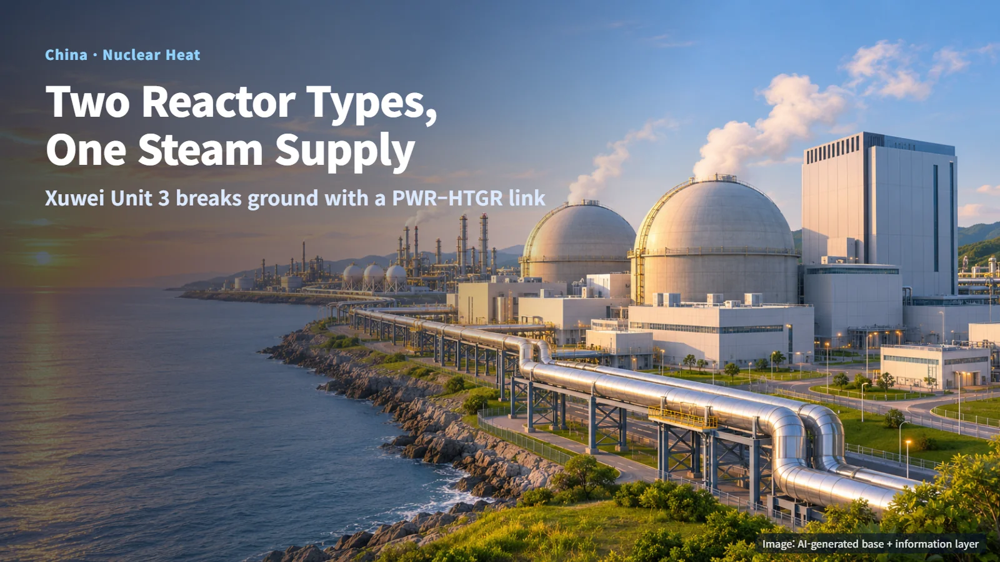
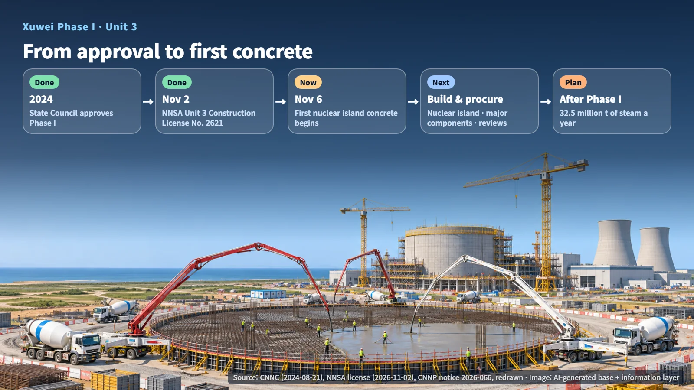
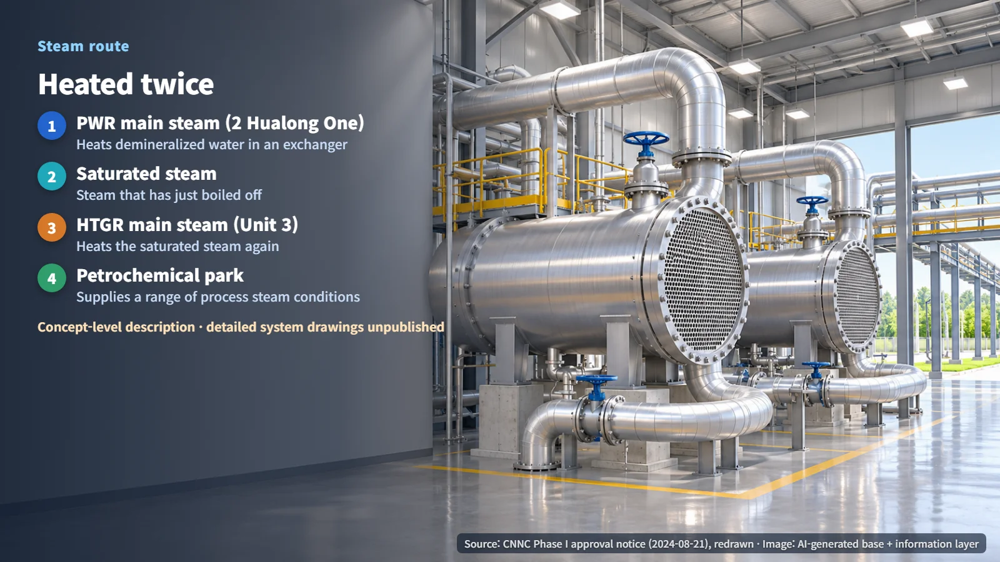
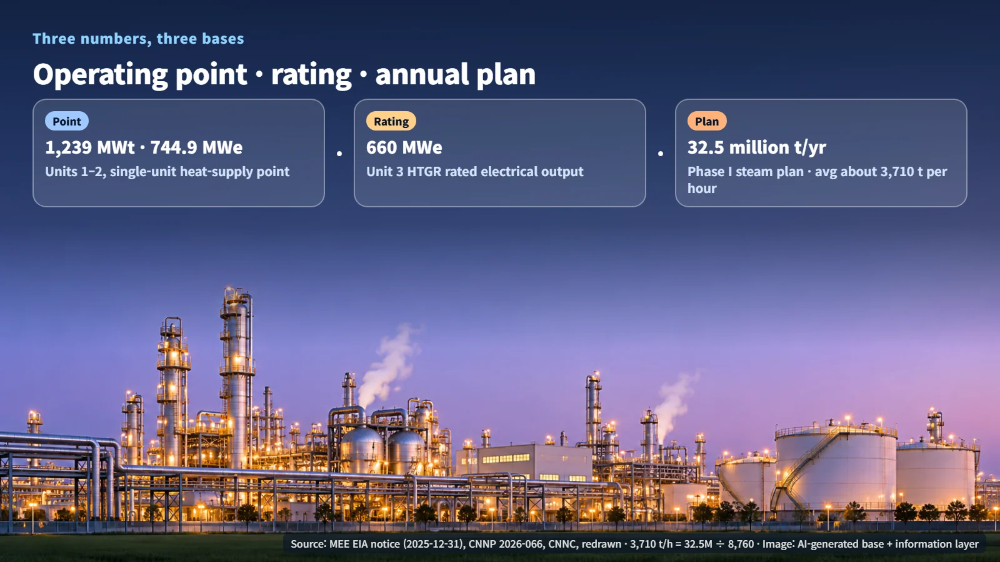

China · HTGR · Industrial Steam
Two Reactor Types, One Steam Supply: Xuwei Unit 3 Breaks Ground in China
Xuwei pairs two Hualong One PWRs with a Chilong One HTGR to supply process steam to a petrochemical complex. Unit 3 poured first concrete on November 6.
Most people think of a nuclear plant as a source of electricity. At Xuwei in China's Jiangsu Province, a project is under way to send nuclear heat to a petrochemical complex as process steam for its factories, and on November 6, 2026, construction began on the project's third reactor. What makes Xuwei unusual is that it pairs two different kinds of reactor. Below we look at why the project is designed that way and where it stands today. If our November 5 post on Helsinki's SMR district-heating plans showed nuclear heat warming a city, Xuwei shows nuclear heat feeding industry.

Unit 3's Nuclear Island Is Under Way: From License to First Concrete
China National Nuclear Corporation (CNNC) describes Xuwei Phase I as a combination of two Hualong One pressurized water reactors (PWRs), one high-temperature gas-cooled reactor (HTGR), and steam heat-exchange facilities. The project received State Council approval in 2024. Unit 3, where work has now started, is a Chilong One HTGR developed by CNNC and Tsinghua University, with a rated output of 660MWe and a design life of 60 years. An HTGR carries heat away from the core with helium gas instead of water, which lets it deliver heat at higher temperatures than a PWR.
The steps followed one another quickly. On November 2, China's National Nuclear Safety Administration (NNSA) issued Construction License No. 2621 for Unit 3, confirming that the site was ready to pour the base concrete for the nuclear island, the area that houses the reactor and its key safety systems. On November 6, China National Nuclear Power announced that the first concrete would be poured that day, and World Nuclear News, citing CNNC, reported the same day that pouring had begun. Four days after the license was issued, the first concrete went into the foundation of Unit 3's nuclear island. First concrete marks the formal start of nuclear construction. Next come construction of the nuclear island, procurement of major components, and further regulatory reviews.

Heating the Steam Twice
The steam route CNNC has published works in two stages. First, main steam from the PWRs heats demineralized water (water with impurities removed) to produce saturated steam, meaning steam that has just boiled off the water. Then main steam from the HTGR heats that steam a second time. Steam made with PWR heat passes through a heat exchanger on the HTGR side and comes out hotter.

The reason for using two reactors lies in temperature. Because a PWR uses water as its coolant, the steam it can produce is relatively cool, while an HTGR can produce hotter steam. Petrochemical processes each need steam under different conditions, so the plan is a division of labor: the PWRs supply the base steam, and the HTGR adds the extra heat where higher temperatures are required, so the plant can serve a range of steam conditions.
The phrase "heating demineralized water" also carries meaning. Steam on the reactor side hands over only its heat in the heat exchanger, and the steam sent to the industrial park is made from a separate supply of clean water. Think of a double boiler: the water in the outer pot warms the food in the inner bowl while the two stay apart. This route is the description given at the project-concept stage; details of piping, valves, and radiation monitoring in the final system diagram have yet to be published.
Three Numbers, Three Different Bases
Documents on the project contain several large numbers. Each one describes a different condition, so each is best read on its own.
- 1,239MWt and 744.9MWe: From the Ministry of Ecology and Environment's (MEE) environmental assessment notice for Units 1 and 2 (December 31, 2025). These describe a single PWR at its design heat-supply operating point, delivering 1,239MWt of heat while generating 744.9MWe of electricity. MWt measures thermal output; MWe measures electrical output.
- 660MWe: The rated electrical output of the Unit 3 HTGR. How much industrial steam it will supply is a figure to be confirmed in separate documents.
- 32.5 million tonnes of industrial steam per year and up to 11.5 billion kWh or more of electricity: Planned figures for Phase I once the whole phase is complete.
Converting the annual plan into hourly terms makes it easier to picture. Dividing 32.5 million tonnes by 8,760 hours works out to an average of about 3,710 tonnes per hour. Picture an average of 3,710 tonnes of steam flowing through the pipeline to the petrochemical complex every hour, all year round. This is an annual-average conversion; the peak instantaneous flow at times of high demand is a figure for separate documents. In the same way, 11.5 billion kWh divided by 8,760 hours works out to an average output of about 1.3GW.

CNNC has outlined an operating concept in which heat demand sets the level of power generation: heat comes first, and electricity is produced alongside it. The guaranteed supply and the load-following rate when demand shifts or when one heat source is in a planned outage have not yet appeared in public documents.
Conditions Attached to the License, and What Comes Next
The Unit 3 construction license comes with conditions that apply throughout construction. Changing the application, the preliminary safety analysis report, or commitments made during review requires a justification and NNSA approval, and design and site changes must be managed so that they meet safety requirements. Parts whose design is still being refined, such as the heat-supply system, will go through this change-control process whenever they are modified.
Condition 7 of the license calls for long-duration testing of materials for high-temperature components. The materials must be tested under an approved test and evaluation plan, with valid data delivered by the committed dates. Picture component materials that will face high temperatures for long periods enduring the same conditions for a long time in a test facility. The specific test temperatures, durations, and acceptance criteria have not been published.
The HTGR design criteria that NNSA explained on September 29 point in the same direction. They cover the fundamental safety functions of reactivity control, residual heat removal, and confinement of radioactive material, and they give separate emphasis to responding to accidents in which water or air enters the helium-cooled reactor system. For a reactor that sits right next to the heat-exchange equipment that makes steam, that emphasis deserves attention.
Xuwei Unit 3 has just begun nuclear island construction. The next milestones to watch are progress on the nuclear island, procurement of major components, and the publication of steam-system commissioning plans and the industrial park's acceptance conditions. As nuclear power takes on factory heat alongside electricity, this site will serve as a reference point for how quickly that shift becomes reality.